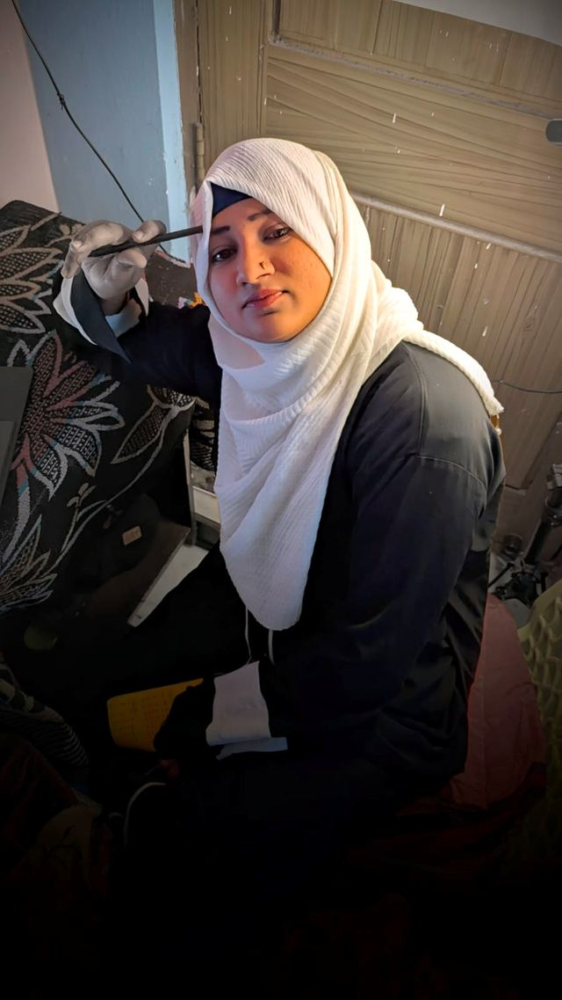

Your title belongs to your company. Your voice belongs to you.
I'm Fathima Samreen. I turn what you know into words people trust, so your name opens doors your title can't.
Helping Muslim women executives turn their expertise into a voice people follow.

Brilliant inside. Invisible outside.
Inside her company, everyone knows what she is worth. Outside, almost nobody can see it. I call that the articulation gap. Closing it is my work.
I work with Muslim women executives, senior leaders and founders who:
- Have lived enough to know shortcuts don't work
- Don't want to sound like everyone else online
- Care more about clarity than constant visibility
- Feel there is a book inside them, but haven't named it yet
- Want their work to outlive platforms and algorithms
I don't just create content.
I help leaders make sense of the road they have walked. Ghostwriting, brand & book strategy and authority strategy. Each one starts with your story.
Books & book strategy
Books you don't rush to finish. Books you return to. I ghostwrite transformation and leadership books that feel honest and grounded, planned with you first: the idea, the structure and the audience it is for.
Ghostwriting & personal brand
LinkedIn thought leadership, newsletters, long-form essays and visual assets, all rooted in one clear story. A brand that sounds like you, stays consistent and never feels performative.
Authority strategy
Authority comes from being understood, wherever you show up. The goal is simple: when people hear your name, they know what you stand for.
A book, a weekly newsletter and a profile that made a leader's expertise visible. 4,500+ newsletter subscribers and 800+ community members.
LinkedIn followers for Bhavna, over 14 to 18 months of partnership, with the profile updated each time her offer evolved.
Paid members added to a founder-led community, through strategy, content, design and positioning.
In their words.
The ideas and experiences in the book were mine, but she helped me shape them into something people could truly connect with … she helped turn the book into a complete authority platform.
We hired Fathima and her team as our marketing manager. She really helped us find our brand voice and set us up for success.
She takes the time to carefully understand the objectives of each piece of content … She has been a true gift to our team, and our growth on social media.
I thank Fathima Samreen, my ghostwriter, who has done an exceptional job of framing the entire story so beautifully and deftly weaving my thoughts into words.
Fathima has done a wonderful job of designing and optimizing my LinkedIn profile … I strongly recommend her as a dedicated, professional and capable artist.
She found the perfect balance between content creation and Art. She possesses a unique way with words and an insatiable passion for writing.
Swipe for more →
Close your
articulation gap.
Five stories you already own, turned into post ideas and a profile that speaks for you while you do your job.

Latest articles.
The articulation gap: why brilliant women go blank
She can talk for forty minutes about how she turned a team around. Ask her to write one post about it and she goes blank. Here is why, and three moves to close the gap.
Read the article →Four questions I ask before I write a word
My first meeting with a client has no writing in it. Just four questions, and my chai going cold. Most leaders can't answer the third one on the first try.
Read the article →Stories for women who carry many roles.
Executive, mother, wife, daughter. None of it is worthless. Every role you carry is part of your story. Get my letters on voice, worth and building a career from where you are.